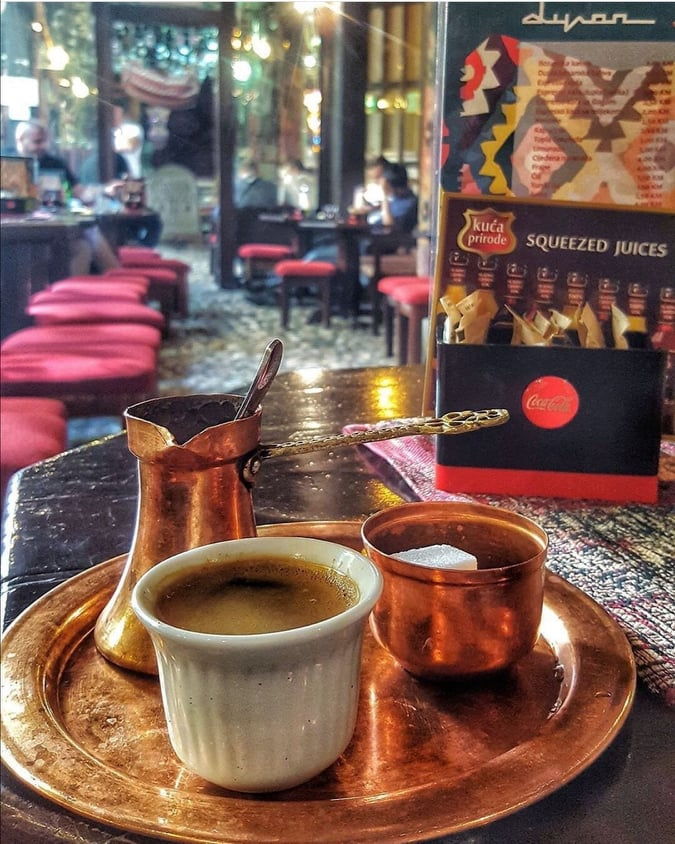
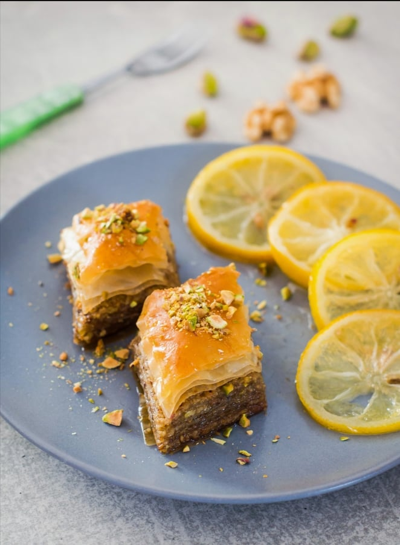

Dobrodošli!
Dobrodošli! 
Zanimljivosti
Caffe Divan
U aprilu 2004. godine Caffe Divan otvorila su dva prijatelja Zijad Bajrić i Muhamed Kurtalić. "Poslije rata smo imali neke privremene poslove i snalazili se, pa smo odlučili otvoriti kafić. Ništa nismo planirali, sve je došlo samo od sebe", izjavio je Bajrić navodeći kako su jedino odlučili da ne žele služiti alkohol u kafiću. Do nedavno Divan nije želio uvesti ni wi-fi, ali je pod pritiskom mlađih generacija popustio, ispričao nam je Bajrić. Za razliku od drugih mjesta i bez internetske mreže uvijek je bio pun.
Pročitaj više
 Ponuda
Ponuda
Kafe i Sokovi

Nudimo vam veliku ponudu svih vrsta kafa kao što su: espresso, nescafe, čuvena Zaimova kafa, Bosanska kafa i mnoge druge. Također možete izabrati gazirane ili prirodne cijeđene sokove.
Čajevi
Pored raznovrsnih okusa "običnih" čajeva, u našoj ponudi možete naći i turske čajeve i probati ako do sada niste imali priliku.
Kolači

Čekaju Vas uvijek svježi i ukusni kolači. Trudimo se očuvati tradiciju i Bosansku kuhinju. Neki od kolača koji su ponudi: hurmašice, trileće, baklave, tufahije i dr.
Dnevni Meni

A možete probati i:
- Cijeđeni sokovi
- Topla čokolada
- Nescafe
- Kapućino
- Ostali kolači
- Esspreso kafa